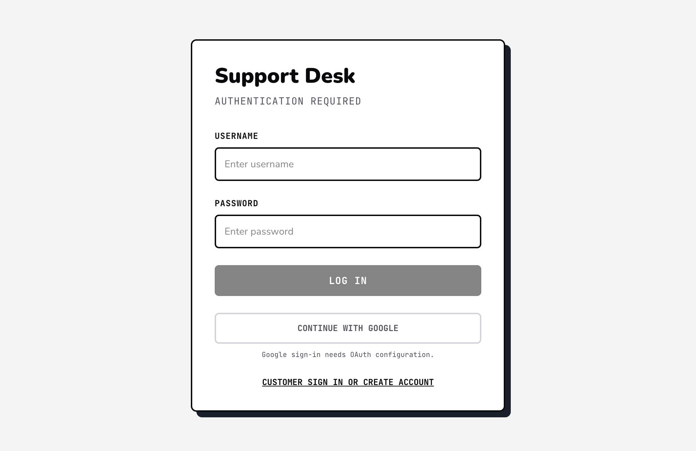
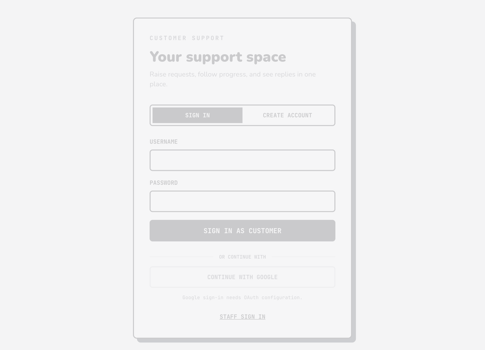
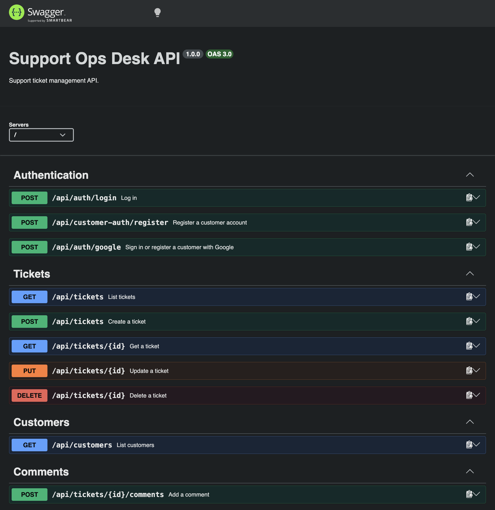

Support Ops Desk
Runbook for setup, role-based workflows, testing, Docker operation, troubleshooting, and handoff.
Operator map
- Application roles
- Requirements and first setup
- Docker operation
- LAN and multi-device use
- Google sign-in
- Role workflows
- Ticket conversations
- Persistence and rollback
- Testing and release checks
- Screenshot evidence
- Troubleshooting
- Security handoff
What the application does
Requirements and first setup
- Node.js 22 or newer. The Docker image uses Node.js 24.
- npm and MongoDB 7 or newer.
- Chrome, Edge, Safari, or Firefox.
- Docker Desktop with Compose v2 for the container setup.
git clone <repository-url> cd Internship-main npm install cp .env.example .env
Set MONGO_URI, PORT, CORS_ORIGIN, and ADMIN_PASSWORD in
.env. Google variables are optional. Never commit .env.
npm run dev
Open staff/admin at http://localhost:3000/login and customers at
http://localhost:3000/customer/login.
admin with the value of
ADMIN_PASSWORD, defaulting to admin@2026. Change it before shared or production use.
Docker operation
docker compose up --build -d docker compose ps curl http://localhost:3000/api/health/db
The app container runs the compiled Node.js/Express server and frontend. MongoDB runs as a single-node replica set because account creation, ticket creation, deletion, and restore use transactions. The one-shot initializer configures the replica set.
- Keep data:
docker compose down. - Reset all data:
docker compose down -v. - Change the host port:
PORT=3001 docker compose up --build -d. - Rebuild after changing
VITE_GOOGLE_CLIENT_ID.
app is running, mongo is healthy, and
/api/health/db returns HTTP 200 with a connected database response.
Using multiple devices
The server binds to 0.0.0.0, so devices on the same LAN can use the host computer's IP address:
ipconfig getifaddr en0 http://192.168.1.25:3000/login http://192.168.1.25:3000/customer/login
- Use separate administrator, staff, and customer accounts.
- Create staff accounts from the administrator's Manage staff screen.
- Customers can register from the customer login page.
- Test
http://<host-ip>:3000/api/health/dbfrom another device.
If access fails, check the network, host process, macOS firewall, and port availability. For a LAN demo
without hot reload, use DISABLE_HMR=true npm run dev.
Google sign-in
- Configure the OAuth consent screen in Google Cloud Console.
- Create a Web application OAuth client.
- Add each local or deployed origin to Authorized JavaScript origins.
- Set the same client ID in
GOOGLE_CLIENT_IDandVITE_GOOGLE_CLIENT_ID. - Restart or rebuild after changing environment values.
Customer Google sign-in creates or links a customer account. Staff Google sign-in works only for a pre-provisioned staff or administrator account with the same email.
Role-based operating workflows
/login; create staff accounts; edit role, team,
branch, and profile details; review workload; assign tickets to available staff; inspect or restore deleted
tickets.
Open -> In Progress -> Resolved -> Closed; update activity state and availability.
/customer/login; raise a ticket; open it from
My requests; read the shared Activity Log; reply while open; continue reading after closure.
Conversation behavior
- Customers and staff share the same MongoDB comment records.
- Staff comments appear in the customer activity log.
- Customer replies appear in the staff activity feed.
- Closed tickets are read-only; the API rejects new comments with HTTP 409.
- Deleted tickets leave active lists and move to
deleted_tickets.
Live application evidence



/api-docs.Persistence and deleted-ticket rollback
Important collections are users, customers, tickets,
deleted_tickets, comments, auditlogs, notifications, and
migrations.
Deleting a ticket archives the complete document with deletedAt and deletedBy,
removes it from active tickets, and retains comments and audit history. Administrators can list and restore
archived tickets:
curl -H "Authorization: Bearer <admin-user-id>" \ http://localhost:3000/api/admin/deleted-tickets curl -X POST -H "Authorization: Bearer <admin-user-id>" \ http://localhost:3000/api/admin/deleted-tickets/<ticket-id>/restore
Testing and release checks
npm run lint npm run lint:eslint npm run format:check npm test npm run build docker compose up --build -d docker compose ps curl http://localhost:3000/api/health/db
The verified local pass completed TypeScript, ESLint, Prettier, 31 tests, production build, Docker rebuild, MongoDB health, route checks, and 100 repeated health requests. Protected API routes correctly rejected requests without a bearer token.
Vite may report a main JavaScript bundle over 500 kB. This is a performance warning rather than a failed release.
Manual smoke test
- Sign in as admin.
- Create a staff account.
- Register a customer in another browser.
- Create a customer ticket.
- Confirm it appears for staff.
- Exchange staff and customer comments.
- Close the ticket and confirm replies are disabled.
- Delete and restore it as admin.
- Confirm ticket and history return.
Common recovery paths
White screen or stale behavior
Stop old Node processes, start one server, and hard refresh with Cmd + Shift + R. A server
started before a code change will not contain newly added API routes.
Port already in use
lsof -nP -iTCP:3000 -sTCP:LISTEN PORT=3001 npm run dev
Database unavailable
Check /api/health/db, verify MONGO_URI, review Atlas IP allowlisting, and confirm
database permissions.
Authentication appears stuck
Sign out, clear site local storage, or use a private window. Each browser/device stores its own development session.
Security handoff
The current authentication model is intentionally small for development: the browser stores a user ID and sends it as a bearer token. Before public production use, add secure server-managed sessions or signed short-lived tokens, HTTPS, secret rotation, stronger password policy, audit-safe logging, and a restricted CORS origin.
Keep screenshots free of passwords, tokens, personal data, private hostnames, and real customer information.